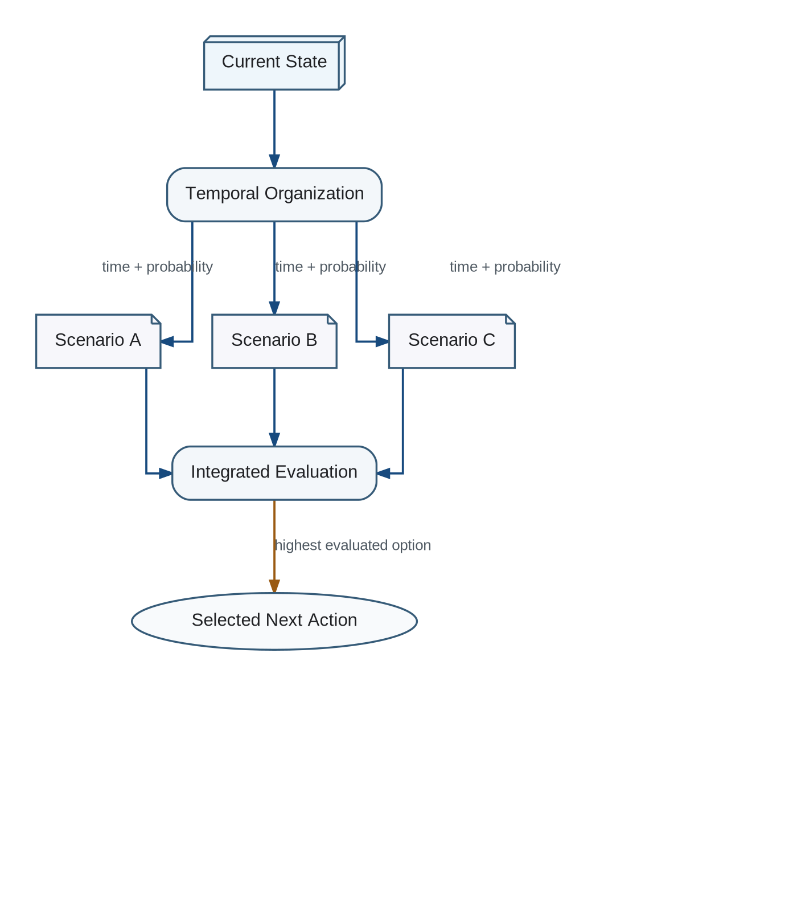

Every multi-step scenario should include time estimates, deadlines, waiting periods, synchronization constraints, and probability distributions over completion or transition times.
Temporal Scenario Organization

Temporal planning enables the evaluator to compare immediate and delayed outcomes and prevents a plan from being treated as an unordered list of semantically valid actions.